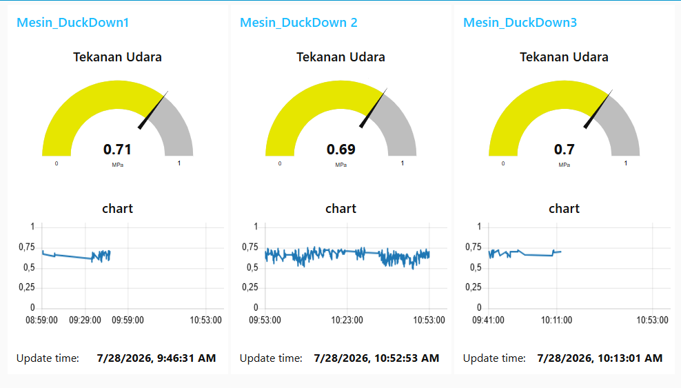
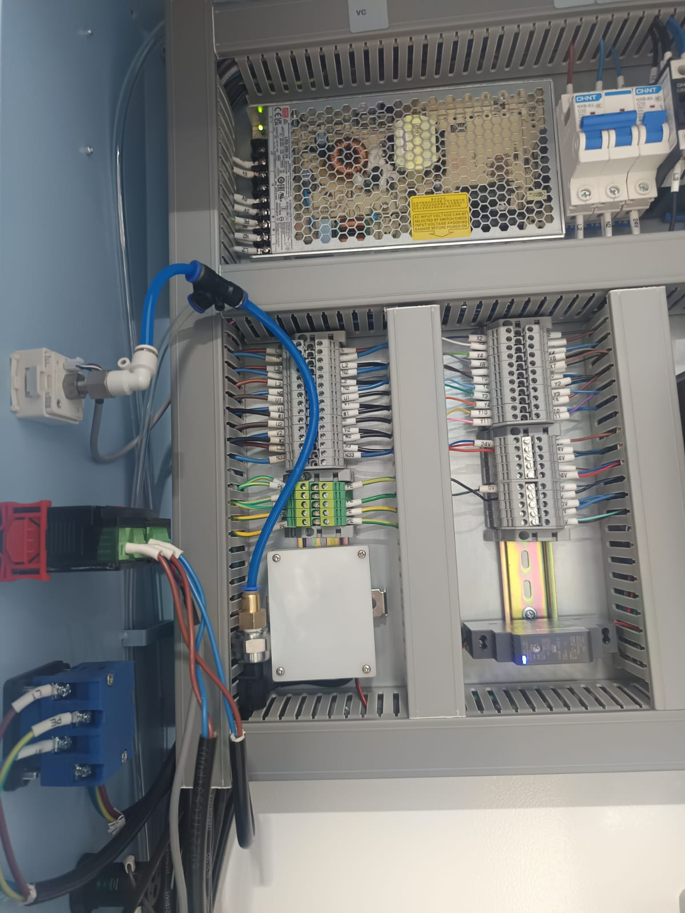

Real-time compressed air pressure monitoring for Duck Down Filling Machines using MQTT-based sensor telemetry and a centralized dashboard for industrial machine condition monitoring.
Developed a real-time compressed air pressure monitoring system for pneumatic production machines, specifically Duck Down Filling Machines. The system continuously measures pressure and publishes sensor data using MQTT, enabling low-latency updates and efficient bandwidth utilization for industrial monitoring.

Monitoring dashboard screenshot showing real-time compressed air pressure and trend visualization.
Installed industrial pressure sensor mounted on the machine panel for pneumatic monitoring.This project enhanced expertise in Industrial IoT, embedded systems, and machine condition monitoring. Integrating pressure sensors with MQTT communication and a centralized dashboard increased production visibility while supporting predictive maintenance and smarter factory operations.